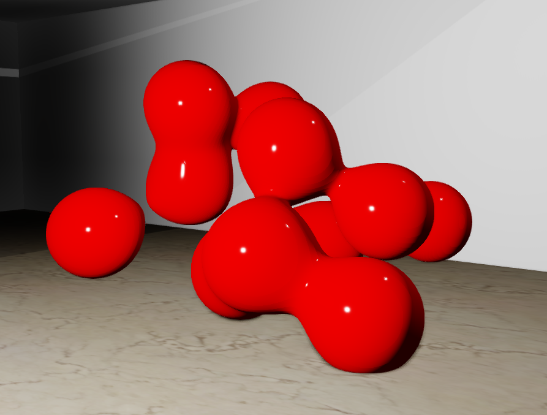

Ray Marching and SDFs
Before we get into how I implemented ray marching I want to briefly cover how it works and also explain what Signed Distance Field Functions are.
Signed Distance Field Functions
First we need to talk about Signed Distance Field Function (SDF). SDF are functions that given a point will tell you how close you are to the surface of an object, the SDF of a circle would be the distance between the middle of the circle and the point given to the function minus the radius of the circle. There are tons of SDF functions for all types of primitive shapes.
Ray Marching
Ray marching is a type of ray tracing where we “March” along the path of the ray until it reaches the object, the distance of each march is calculated by taking the result of every object's SDF functions and using the shortest distance. This video does a great job explaining how it works in depth.
When I first learned about Ray Marching and Signed distance field Functions, I thought it was so interesting, I really liked the idea of being able to represent objects as functions. Using ray marching you can render some pretty cool geometry that otherwise would be very expensive to render with vertices. The geometry that we render with ray marching is also pixel perfect compared to vertices where high vert count is needed to render smooth objects without normal maps. There are also functions to mix SDF functions of objects giving this combined effect, I'll showcase this later with Meta balls.
My Implementation
The ray marching rendering in my engine is all done within a compute shader which runs per frame. The compute shader renders the SDF function geometry to the G buffer where lighting is applied with all the other geometry.

The above picture shows Metaballs being rendered using ray marching in my Rendering Engine.
Metaballs are spheres that pull and mend with each other creating these blobs. This would be very expensive to render with vertices and would also make them static, moving the blobs in real time would have no effect on the performance of the rendering.
That's pretty much it for this article, I want to explore ray marching a bit more in the future, right now my engine only supports the metaballs but I'd like to expand on what kind of SDF functions can be passed to the renderer.